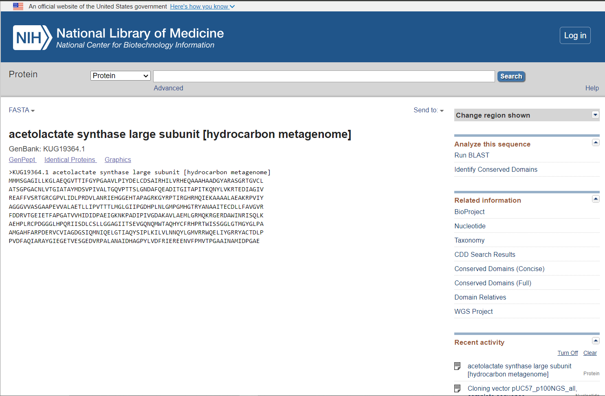
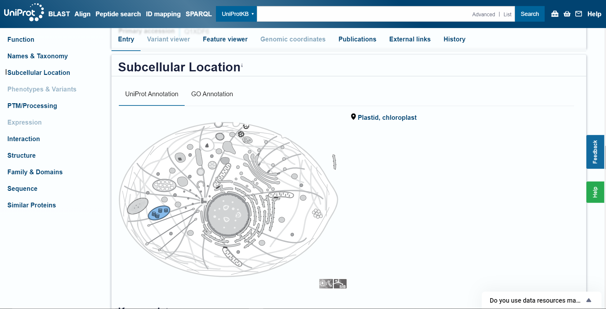

S40#
Avtor: Nika Makuc
Datum izdelave: 2024-05-26
Koda seminarja: S40
Vhodni podatek#
Povezava do datoteke z vhodnim podatkom: S40
Rezultati analiz#
Identifikacija vključka#
Za identifikacijo gena, ki je s pomočjo vključka vstavljen v vektor, sem najprej poiskala celotno nukleotidno zaporedje vektorja pUC57 v bazi podatkov GenBank. V iskalno polje sem vpisala ‘pUC57’ in izvedla iskanje. Med dobljenimi zadetki sem izbrala drugi zadetek (GenBank: OQ726014.1). Nato sem odprla FASTA format celotnega nukleotidnega zaporedja vektorja (povezava FASTA na levi strani, pod GenBank kodo vektorja).
Nato sem odprla FASTA format celotnega nukleotidnega zaporedja vektorja (povezava FASTA na levi strani, pod GenBank kodo vektorja). Celotno nukleotidno zaporedje v FASTA formatu sem uporabila pri poravnavi vektorja in danega vhodnega podatka.
Celotno nukleotidno zaporedje v FASTA formatu sem uporabila pri poravnavi vektorja in danega vhodnega podatka.
S pomočjo programa EMBOSS Needle sem izvedla globalno poravnavo nukleotidnih zaporedij vektorja in vhodnega podatka, da sem lahko identificirala, kateri del vhodnega podatka predstavlja vključek in kateri je del vektorja. Za uspešno izvedbo poravnave sem v za to namenjeni polji prekopirala nukleotidno zaporedje vektorja in vhodni podatek, kjer sem za vrsto zaporedja izbrala DNA. Po uspešni poravnavi sem poiskala tisti del poravnave, kjer se zaporedji popolnoma ujemata, saj to pomeni, da gre za zaporedje vektorja (na sliki je viden del delno ujemajoče in popolnoma ujemajoče poravnave). 
 Posledično sem del nukleotidnega zaporedja vhodnega podatka, ki se je popolnoma poravnal, izključila, saj ne predstavlja iskanega vključka, ampak zapis za vektor. Ugotovila sem, da se vključek začne z 1309. nukleotidom vhodnega podatka in konča z 2645. nukleotidom in je torej dolg 1337 nukleotidov.
Posledično sem del nukleotidnega zaporedja vhodnega podatka, ki se je popolnoma poravnal, izključila, saj ne predstavlja iskanega vključka, ampak zapis za vektor. Ugotovila sem, da se vključek začne z 1309. nukleotidom vhodnega podatka in konča z 2645. nukleotidom in je torej dolg 1337 nukleotidov.
Ime proteina#
Zaporedje identificiranega vključka sem vnesla v program blastx, s katerim sem v metagenomski zbirki iskala protein, ki ga kodira del vključka. Za iskanje sem izbrala blastx, saj sem kot vhodni podatek vnesla nukleotidno zaporedje, iskala pa sem protein (torej aminokislinsko zaporedje). Pri opciji ‘Databases’ sem izbrala ‘Metagenomic proteins’, saj vključek vsebuje del genomske dna, kjer se nahaja iskani protein. Med dobljenimi zadetki, se je z vključkom najbolj ujemal prvi zadetek (GenBank: KUG19364.1).  Iskani protein je torej najverjetneje velika podenota encima acetolaktat sintaze (acetolactate synthase large subunit).
Iskani protein je torej najverjetneje velika podenota encima acetolaktat sintaze (acetolactate synthase large subunit).
Kodirajoče nukleotidno zaporedje dobljenega zadetka (GenBank: KUG19364.1) sem nato odprla v FASTA formatu in z EMBOSS Needle naredila globalno poravnavo z vključkom.  Tako sem ugotovila, kolikšen del kodirajočega zaporedja tega proteina predstavlja vključek v plazmidu.
Tako sem ugotovila, kolikšen del kodirajočega zaporedja tega proteina predstavlja vključek v plazmidu.
Izvorni organizem proteina#
Dobljen zadetek sem odprla v GenBank (GenBank: KUG19364.1) in njegovo aminokislinsko zaporedje odprla v FASTA formatu.  FASTA format sem nato prekopirala v blastp, kjer sem iskala protein, za katerega zapisuje gen v vključku. Pri opciji ‘Databases’ sem izbrala ‘UniProtKB/Swiss-Prot’, saj sem želela najti ustrezen protein v bazi podatkov UniProt. Dobljeni zadetki so se delno ujemali. Najbolj se je ujemal prvi zadetek,  ki sem ga nato odprla v UniProtu (Q57725). Ta protein se nahaja v organizmu Methanocaldococcus jannaschii, ki je termofilna metanogena arheja. Ker se je ta protein najbolj ujemal z iskanim, je verjetno, da se tudi iskani protein nahaja v tem organizmu.
ki sem ga nato odprla v UniProtu (Q57725). Ta protein se nahaja v organizmu Methanocaldococcus jannaschii, ki je termofilna metanogena arheja. Ker se je ta protein najbolj ujemal z iskanim, je verjetno, da se tudi iskani protein nahaja v tem organizmu.
Ostali možni izvorni organizmi#
Ker se tudi ostali zadetki v podobni meri ujemajo z iskanim proteinom (izbrala sem tiste, ki se ujemajo nad 48%), sem še preverila v katerih organizmih se ti nahajajo, saj bi se lahko iskani protein nahajal tudi v katerem izmed teh organizmov. 
Protein z UniProt kodo za dostop P37251 se nahaja v Bacillus Subtilis (bakterija).  Protein z UniProt kodo za dostop P27868 se nahaja v Arthrospira platensis (cianobakterija).
Protein z UniProt kodo za dostop P27868 se nahaja v Arthrospira platensis (cianobakterija).  Protein z UniProt kodo za dostop Q1XDF6 se nahaja v Neopyropia yezoensis (alga).
Protein z UniProt kodo za dostop O08353 se nahaja v Methanococcus aeolicus (arheja).
Protein z UniProt kodo za dostop O19929 se nahaja v Cyanidium caldarium (alga).
Protein z UniProt kodo za dostop Q1XDF6 se nahaja v Neopyropia yezoensis (alga).
Protein z UniProt kodo za dostop O08353 se nahaja v Methanococcus aeolicus (arheja).
Protein z UniProt kodo za dostop O19929 se nahaja v Cyanidium caldarium (alga).  Protein z UniProt kodo za dostop Q7U5G1 se nahaja v Parasynechococcus marenigrum (bakterija).
Protein z UniProt kodo za dostop Q7U5G1 se nahaja v Parasynechococcus marenigrum (bakterija). 
Lokalizacija#
V UniProtu sem pri najbolj ujemajočem proteinu iz organizma Methanocaldococcus jannaschii pogledala kje se ta v celici nahaja. To sem našla pod zavihkom ‘Subcellular Location’. Ugotovila sem, da se nahaja v citoplazmi, kar pomeni, da se iskani protein tudi najverjetneje nahaja v citoplazmi celice. 
Ostale možne lokalizacije#
Ponovno sem preverila kje se nahajajo še proteini iz ostalih zadetkov (enakih kot prej):
Protein z UniProt kodo za dostop P37251 se nahaja v citoplazmi. Protein z UniProt kodo za dostop Q1XDF6 se nahaja v kloroplastih.  Protein z UniProt kodo za dostop O19929 se nahaja v kloroplastih.
Pri ostalih zadetkih podatka za lokacijo ni bilo.
Iz tega lahko sklepam, da se ta protein lahko nahaja v citoplazmi ali kloroplastih, odvisno od organizma v katerem se nahaja. Pri arhejah in bakterijah se namreč nahaja v citoplazmi, pri algah pa v kloroplastih.
Velikost proteina#
Za določitev velikosti iskanega proteina, sem uporabila orodje Protparam. V iskalno polje sem vnesla aminokislinsko zaporedje iskanega proteina (GenBank: KUG19364.1) v FASTA formatu.  Velikost proteina znaša 59460.25 Da oz. 59.46025 kDa.
Velikost proteina znaša 59460.25 Da oz. 59.46025 kDa. 
Domenska zgradba#
Domensko zgradbo sem identificirala na UniProtu pod zavihkom ‘Family & Domains’. Protein z UniProt dostopno kodo Q57725 ima le tiamin pirofosfat vezavno domeno.  To domeno imajo tudi ostali podobni proteini (ti, ki sem jih omenila pri vrstah organizmov in lokalizaciji). Iz tega sklepam, da ima tudi iskani protein tiamin pirofosfat vezavno domeno.
To domeno imajo tudi ostali podobni proteini (ti, ki sem jih omenila pri vrstah organizmov in lokalizaciji). Iz tega sklepam, da ima tudi iskani protein tiamin pirofosfat vezavno domeno.
Post-translacijske modifikacije#
Post-translacijske modifikacije sem identificirala na UniProtu, pod zavihkom ‘PTM/Processing’. Protein z UniProt dostopno kodo Q57725 nima post-translacijskih modifikacij, kot jih tudi nimajo ostali prej omenjeni podobni proteini.  Iz tega, sklepam, da tudi iskani protein nima post-translacijskih modifikacij.
Iz tega, sklepam, da tudi iskani protein nima post-translacijskih modifikacij.
Funkcija proteina#
Funkcijo proteina sem identificirala na UniProtu pod zavihkom ‘Function’. Protein z UniProt dostopno kodo Q57725 je encim transferaza, ki substrat piruvat pretvarja v (2S)-2-acetolaktat. 
 Za delovanje potrebuje kofaktor tiamin pirofosfat in Mg2+ ione. Na podlagi tega sklepam, da ima tudi iskani protein takšno funkcijo.
Za delovanje potrebuje kofaktor tiamin pirofosfat in Mg2+ ione. Na podlagi tega sklepam, da ima tudi iskani protein takšno funkcijo.
Sorodni proteini#
Poravnava#
Poravnavo sorodnih proteinov sem izvedla v programu blast. Najprej sem označila tiste proteine, ki sem jih želela poravnati (kako sem prišla do teh zadetkov, je opisano pri ‘ime proteina’). Izbrane proteine sem poravnala v blastu (s40-ta izvaja poravnavo z orodjem Cobalt) s klikom na ‘Multiple alignment’. 

Filogenetsko drevo#
Tudi filogenetsko drevo sorodnih proteinov sem prikazala kar v blastu, kjer sem ob enakih izbranih proteinih, kot pri poravnavi, kliknila na ‘Distant tree of results’. 
Ohranjene regije#
Ohranjenost regij sem analizirala v blastu, tako da sem označila prvih 100 dobljenih zadetkov pri iskanju iskanega proteina in kliknila na ‘Graphic Summary’. Razvidno je, da zadetki pokrivajo velik del iskanega zaporedja. Poravnave so namreč obarvane z rdečo ali roza barvo, kar nakazuje na dobro ujemanje zaporedij. Najbolj ohranjena je tiamin pirofosfat vezavna domena.
Sorodni evkariontski proteini#
Sorodne evkariontske proteine sem poiskala s pomočjo programa blastp, kamor sem vnesla FASTA format aminokislinskega zaporedja za veliko podenoto acetolaktat sintaze (GenBank: KUG19364.1) (kako sem do tega prišla je opisano pri ‘ime proteina’). . Pri nastavitvi ‘Databases’ sem izbrala ‘UniProtKB/Swiss-Prot’, saj sem iskala proteine, pri ‘Organism’ pa ‘Eucaryotae’, saj so me zanimali sorodni evkariontski proteini. Dobila sem 38 zadetkov, kjer sem se za nadaljnjo analizo omejila na prve štiri (ujemanje nad 47%).
Organizem#
Podatke o organizmih, v katerih se nahajajo podobni proteini sem našla v UniProtu, pod ‘Organism’.
Protein z UniProt kodo za dostop O78518 se nahaja v Guillardia theta (alga).  Protein z UniProt kodo za dostop Q1XDF6 se nahaja v Neopyropia yezoensis (alga).
Protein z UniProt kodo za dostop Q1XDF6 se nahaja v Neopyropia yezoensis (alga).  Protein z UniProt kodo za dostop O19929 se nahaja v Cyanidium caldarium (alga).
Protein z UniProt kodo za dostop P69683 se nahaja v Porphyra purpurea (alga).
Protein z UniProt kodo za dostop O19929 se nahaja v Cyanidium caldarium (alga).
Protein z UniProt kodo za dostop P69683 se nahaja v Porphyra purpurea (alga).
V blastu pod zavihkom ‘Taxonomy’ sem preverila ali so sorodni evkariontski proteini prisotni tudi v drugih organizmih, kot v algah. Ugotovila sem, da so prisotni še v mnogih drugih evkariontskih organizmih, kot so rastline, glive pa tudi živali. 
Imena proteinov#
Imena sorodnih evkariontskih proteinov sem poiskala kar pri zadetkih v blastu pod zavihkom ‘Description’. Podobni proteini so: velika podenota acetolaktat sintaze, acetolaktat sintaza 1, acetolaktat sintaza 2, acetolaktat sintaza 3, katalitična podenota acetolaktat sintaze, 2-hidroksil-CoA liaza in piruvat dekarboksilaza.
Funkcija#
Podatke o funkciji sem poiskala v Uniprotu pri zgoraj omenjenih prvih štirih zadetkih. Ti proteini imajo tudi transferazno funkcijo, kjer piruvat pretvarjajo v (2S)-2-acetolaktat. 
Potencialna funkcijska povezanost z drugimi proteini#
Funkcijsko povezanost z drugimi proteini sem poiskala s pomočjo Uniprota (Q57725), kjer sem pod zavihkom ‘Interaction’, odprla povezavo do STRING. Iskani protein tvori veliko interakcij z drugimi proteini, kot prikazujeta sliki.
Sorodni evkariontski proteini#
Pri sorodnih evkariontskih proteinih pri prvih štirih zadetkih ni bilo podatka o funkcijski povezanosti z drugimi proteini, bila je šele pri petem zadetku. Prikazana je na spodnjih dveh slikah. 
Model strukture#
Za izdelavo modela proteina sem uporabila strežnik AlphaFold3, kamor sem vnesla FASTA format aminokislinskega zaporedja proteina. Ker me je zanimala struktura proteina, sem pri ‘Molecule type’ označila ‘Protein’.  Nastali model v AlphaFold3 je v veliki meri zanesljiv (temno modro obarvano), razen manjših delov strukture (svetlo modro do rumeno obarvano), ki jih strežnik ni uspel zanesljivo napovedati.
Nastali model v AlphaFold3 je v veliki meri zanesljiv (temno modro obarvano), razen manjših delov strukture (svetlo modro do rumeno obarvano), ki jih strežnik ni uspel zanesljivo napovedati. Model proteina sem iz AlphaFold3 prenesla v program ChimeraX.
Model proteina sem iz AlphaFold3 prenesla v program ChimeraX.  V ChimeraX sem izvedla superpozicijo vseh petih modelov, ki jih je napovedal AlphaFold3.
V ChimeraX sem izvedla superpozicijo vseh petih modelov, ki jih je napovedal AlphaFold3.  Pri tej superpoziciji je razvidno, da so vsi napovedani modeli zelo podobni, le že prej omenjene regije se slabše ujemajo, saj so verjetno bolj fleksibilne.
Pri tej superpoziciji je razvidno, da so vsi napovedani modeli zelo podobni, le že prej omenjene regije se slabše ujemajo, saj so verjetno bolj fleksibilne.
Nato sem naredila še superpozicijo modela iz AplhaFold3 in modela strukture iz UniProta za najbolj podoben protein (Q57725). Dostopno kodo za AlphaFold sem našla na UniProtu pod zavihkom ‘Structure’, v spodnjem rumenem okvirčku. 
Iz superpozicije je razvidno, da se modela zelo dobro ujemata, predvsem na tistih predelih, ki jih je AlphaFold3 zanesljivo napovedal.
Naredila sem še superpozicijo modela iz AlphaFold3 in najbolj sorodnega evkariontskega proteina (O78518). 

Iz te superpozicije je prav tako razvidno, da se modela dobro ujemata, ponovno bolj na tistih predelih, ki jih je AlphaFold3 bolj zanesljivo napovedal, kot na tistih predelih, ki so manj zanesljivi.
Odločila sem se, da bom primerjala še napovedan model AlphaFold3 in najbolj podobno eksperimentalno določeno strukturo proteina. V blastp sem zato v zbirki PDB poiskala podobne proteine, torej proteine, ki imajo določeno strukturo. V blastp sem vnesla FASTA format aminokislinskega zaporedja proteina in za ‘Databases’ izbrala ‘PDB’. Izmed vseh dobljenih zadetkov, se je najbolj ujemal prvi (PDB: 3E9Y). V ChimeraX sem odprla napovedan model AlphaFold3 za iskani protein in eksperimentalno določeno strukturo podobnega proteina iz PDB.
Izvedla sem superpozicijo teh dveh modelov in ugotovila, da se kar dobro ujemata. 
Iz vseh teh superpozicij lahko sklepam, da je AlphaFold3 zelo dobro napovedal strukturo iskanega proteina, ki je tudi v resnici najverjetneje takšna ali pa zelo podobna tej.